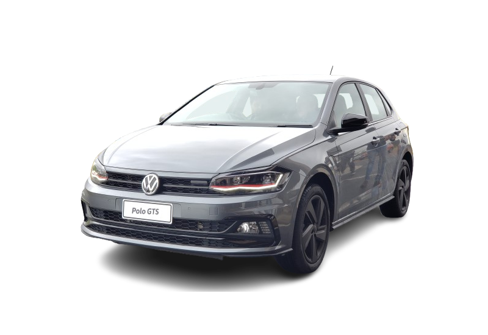

POLO GTS
Com a herança de uma sigla lendária e um coração turbo que pulsa forte, o Polo GTS é o hot hatch que modernizou a paixão, entregando adrenalina e tecnologia em um pacote urbano e cheio de estilo.

HISTÓRIA
O Polo GTS era basicamente um Polo Highline com o motor 1.4 turbo flex de 4 cilindros em linha, trabalhando em conjunto com um câmbio automático de 6 marchas. Ele entrega 150 cv de potência e 25,5 kgfm de torque, independente do combustível escolhido.
Sua lista de itens de série era a mesma da versão Highline, mas com alguns itens de acabamento exclusivos, como filete vermelho na grade, rodas de 18" e pedaleiras esportivas, entre outros
Três modos de condução estão disponíveis para ser ajustado através da central multifuncional (ECO, Normal e Sport). Quando ativado o modo de condução Sport, os parâmetros de curva do pedal do acelerador, esforço de direção, rotação de troca de marchas e ruído do motor são alterados.
O ruído de motor mais esportivo é emulado através de um sistema instalado sob o painel de instrumento que utiliza a chapa corta-fogo dianteira e o para-brisa para reverberar o som de escapamento esportivo para dentro da cabine.
As características de desempenho ficam inalteradas com este ronco que tem boa qualidade sonora, externamente a VW removeu o nome Polo do carro e deixou apenas os emblemas GTS estampados na tampa traseira, laterais e grade frontal.
FICHA TECNICA
Modelo: Polo GTS
Ano: 2020–2023
Motor: 1.4 turbo flex
Potência: 150 cv
Torque: 25,5 kgfm
0–100 km/h: 8,7 s
Vel. Máx: 207 km/h
Peso: 1.213 kg
Tração: Dianteira
Câmbio: Automático 6 marchas
Dimensões (C×L×A): 4.057×1.751×1.468 mm
CURIOSIDADE
Uma curiosidade marcante do Volkswagen Polo GTS (o modelo lançado a partir de 2020) é que ele resgatou a sigla "GTS" (Gran Turismo Sport) no Brasil após um hiato de décadas, sendo o primeiro VW a usá-la desde o Gol GTS dos anos 80 e 90.
GALERIA
Imagens do Polo GTS
Canal: Carro Chefe